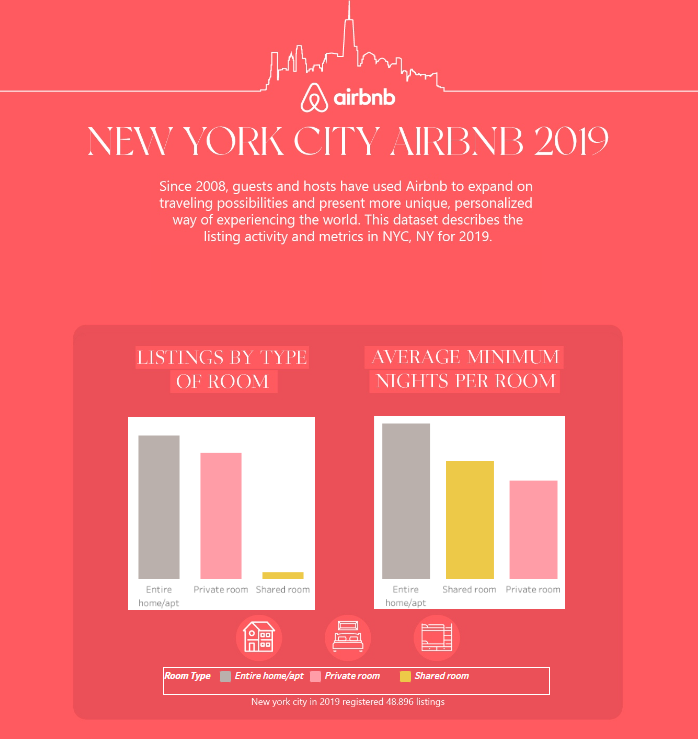

Airbnb NY 2019 dataset, The main objective of this project was to build a dashboboard with interactive features that allow users to explore the listings activity in New York for 2019.
Datasource: Kaggel.


Covid 19 data Exploration of deaths and vaccinations from first outbreak until april 2021 worldwide and Australia.
Skills used: Joins, CTE's, Temp Tables, Windows Functions, Aggregate Functions, Creating Views, Converting Data Types

Goal project was to build a professional-quality business intelligence report, showing the performance of Marven Market businesses worldwide.
BI workflow: connecting and shaping the source data, building a relational model, adding calculated columns and measures,designing an interactive report and shared in Powerbi service.

Dashboard creation in Power BI that provides a holistic view of AW CYCLES operations around the world. It summarizes monthly key metrics, customers info, performance indicators, orders categories and subcategory along with “Drill through” features.
BI workflow: connecting and shaping the source data, building a relational model, adding calculated columns and measures,designing an interactive report and shared in Powerbi service.

Dashboard creation in Excel that provides a perfomance view of "kevin Cookie Company" sales in 2020.
Excel Workflow: Cleaning data, building pivot tables , creating graphs for each pivot table, designing an interactive report and created and shared an "only view" link.